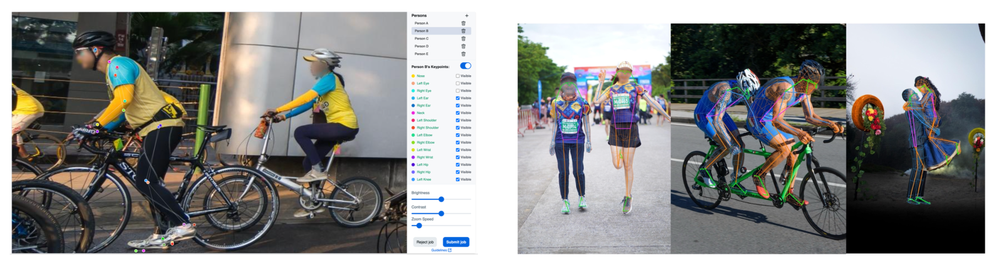
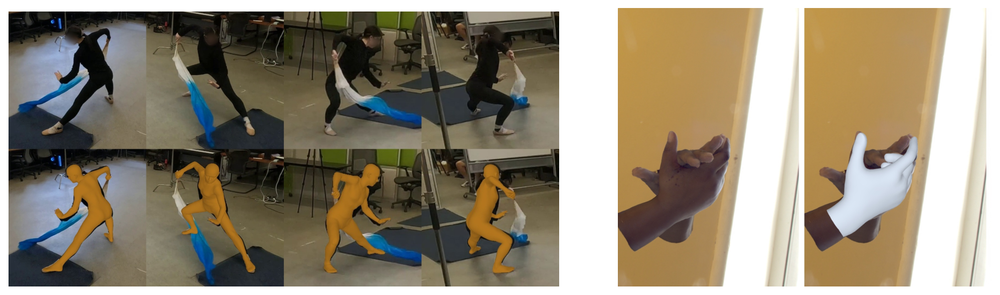
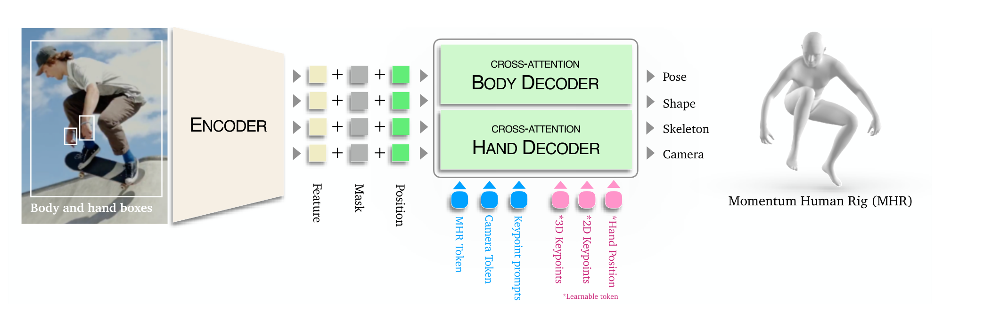
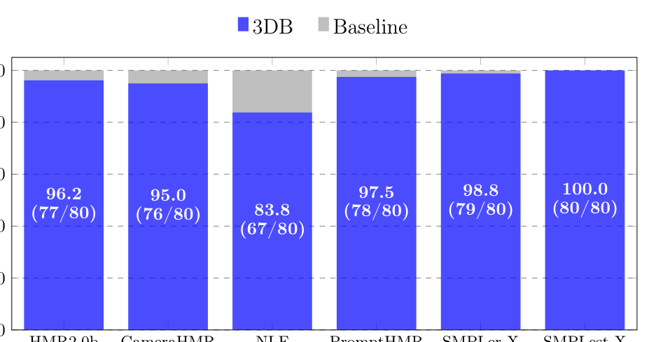
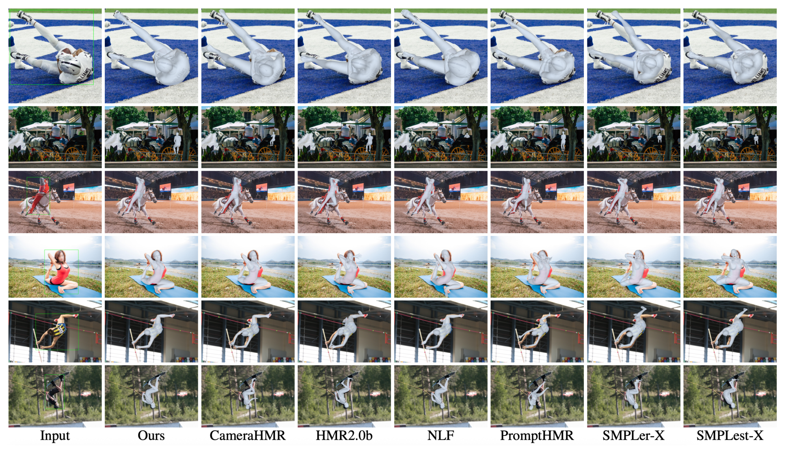

SAM 3D Body 深读：一个全身网格模型，凭什么同时打赢“身体专家”和“手部专家”？
导读。SAM 3D Body（下称 3DB）真正要回答的问题，不是“能不能从单图恢复人体网格”——这件事 HMR 领域做了快十年——而是：为什么历史上「全身模型」在手上总输给「手部专家」、在身体上又难压「身体专家」，以至于没有一个单一模型能同时拿下两端？3DB 的答案有两层：架构上用共享编码器 + 身体/手部双解码器拆开二者互相打架的优化目标，再用可提示（promptable）接口把手腕与肘部互相“喂回去”完成合并；数据上用VLM 驱动的数据引擎主动挖难例 + 多阶段标注流水线产出 700 万张高质量标注。结果：它是首个在身体与手部两条战线同时达到/逼近各自专家水平的单模型。

1. 核心问题：全身模型为什么打不过专家？
从单张图估计人体的姿态（骨架结构）与形状（软组织）是视觉与具身智能理解人的基础能力。但论文开篇就点名痛处：现有 HMR 在野外图像上鲁棒性不足——挑战性姿态、严重遮挡、罕见视角下频频失败，而且很难在同一个框架里既给出可靠的整体身体姿态、又给出手脚的精细细节。
问：那把“身体专家”和“手部专家”各跑一遍、再拼起来，不就行了？
引导：先想清楚二者为什么不能共用一套输出头。它们的输入分辨率、相机假设、监督目标都不一样。
答：这正是论文诊断的身体/手部联合优化冲突。把它拆成三个具名来源：(i) 输入分辨率——手在全身裁剪里只占百分之几，512×512 的身体裁剪下一只手也许只有几十像素，而手部专家喂的是贴合的高分辨率手部裁剪，每根手指的信号量差一两个数量级；(ii) 相机估计——身体姿态需要一个全局透视相机（含 FOV），手部姿态本质是手腕附近的局部、近正交问题，一个相机头同时服务两者会被往两个方向拉扯；(iii) 监督目标——身体数据给身体 + 脚的关键点，手部数据给 21 个手部关键点且手腕可自由摆动，二者的梯度恰好在共享的手腕/前臂自由度上打架。一个统一输出头必须二选一，于是哪边都不极致。
Takeaway：问题不是“能不能做全身”，而是“如何让身体头与手部头各自局部最优，同时还能拼成一个一致的全身”。
2. 贡献拆解：作者明确提出了什么？
作者明确提出的贡献（论文原文三点）：(a) 一个可提示的编码器–解码器架构，可选地以 2D 关键点、mask 或相机信息为条件做可控姿态估计，并在训练/歧义场景下提供交互式引导；(b) 共享图像编码器 + 身体/手部两个独立解码器的「two-way-decoder」设计，缓解上节三类冲突；(c) 不用主流的 SMPL，而是建立在新参数化网格 MHR（Momentum Human Rig）上——它显式解耦骨架姿态与身体形状，带来更强的可控性与可解释性。此外还有数据侧三件套：质量（几何约束 + 参数先验 + 密集关键点回归自动产出高质量标注）、数量（700 万图）、多样性（VLM 数据引擎挖野外难例）。
读者能进一步推断的是：这篇论文的“SAM 味”不在网络本身（编码器–解码器 + cross-attention 是标准件），而在把 SAM 的两件方法论搬进 HMR——可提示接口 + 数据引擎。真正决定鲁棒性的，是数据引擎与标注流水线，而非某个新算子；架构的巧思则集中在“如何用 promptability 把双解码器再缝回去”（见第 5 节）。
3. 数据集与表示：MHR、700 万标注与新评测集
3.1 为什么换掉 SMPL：MHR 的解耦
最常用的人体网格模型 SMPL 把人体参数化为 pose 与 shape；SMPL-X 进一步加入手（MANO）与脸（FLAME）。问题在于：SMPL 的 shape 空间是对体扫的 PCA，它把骨架结构（骨长）与软组织质量分布纠缠进同一个线性空间——于是参数不直接对应骨长，可控性与可解释性受限。MHR（ATLAS 的增强版）则显式解耦骨架与形状，3DB 以它为人体表示。后文会看到，这个解耦不是审美选择：正因为骨架显式，才能在合并步把手部的局部 MHR 参数沿运动学树挂到手腕上。
3.2 训练数据：单视角 + 多视角 + 合成，共 700 万
训练集混合单视角野外、多视角一致、高保真合成三类，覆盖一般身体姿态、手、交互与“野外”条件。下表为论文 Table 1 的完整转录（带 ⋆ 者同时用于训练手部解码器）。
| 数据集 | # 图像 / 帧 | # 主体 | # 视角 |
|---|---|---|---|
| MPII human pose | 5K | 5K+ | 1 |
| MS COCO | 24K | 24K+ | 1 |
| 3DPW | 17K | 7 | 1 |
| AIChallenger | 172K | 172K+ | 1 |
| SA-1B | 1.65M | 1.65M+ | 1 |
| Ego-Exo4D | 1.08M | 740 | 4+ |
| DexYCB | 291K | 10 | 8 |
| EgoHumans | 272K | 50+ | 15 |
| Harmony4D | 250K | 24 | 20 |
| InterHand ⋆ | 1.09M | 27 | 66 |
| Re:Interhand ⋆ | 1.50M | 10 | 170 |
| Goliath ⋆ | 966K | 120+ | 500+ |
| Synthetic ⋆ | 1.63M | – | – |
读这张表要看两件事：野外多样性（SA-1B 1.65M 单视角野外图带来外观/场景广度）与几何高保真（Goliath 500+ 视角、Re:Interhand 170 视角带来可靠 3D 监督）。两类数据的张力——“多样但脏”vs“干净但窄”——正是数据引擎与标注流水线要弥合的（第 4 节）。论文还构建了一个按姿态与外观类别组织的新评测集（24 个 2D 类别、28 个 3D 类别），用于细粒度地拆开“模型在哪类图上强/弱”，而不是只看一个平均数。
4. Pipeline：数据引擎 + 多阶段标注，才是鲁棒性的来源
{kind=link}

问：为什么不直接拿海量视频做时序伪标注、量大管够？
答：因为视频虽量大，但姿态、外观、成像条件、背景往往高度相似——多样性不够。3DB 的数据引擎核心是 VLM 驱动的挖掘：让 VLM 自动生成并迭代更新挖掘规则，从数千万图里找出高价值难例——遮挡、罕见姿态（杂技/舞蹈）、交互（人–物/人–人）、极端尺度、低可见度（弱光/运动模糊）、手身高耦合（手语/运动）。挖掘规则基于当前模型的失败分析半自动迭代：在已标注图上评估 3DB、按关键点误差可视化最难样本、用几个词描述失败 → 拼成文本提示喂给 VLM → VLM 选出新图 → 路由人工标注。这是一个主动学习闭环，把标注预算花在最有信息量的样本上。
Takeaway：数据引擎不是“收集更多”，而是“定向收集模型当前最不会的”——这是泛化（第 6 节 leave-one-out）的真正来源。
多阶段标注与网格拟合（论文 §6）：① 人工标注——在 3DB 初估上复核 2D 关节并打可见性标签；② 单图网格拟合——用当前 3DB 给 MHR 初值 + 高容量检测器给 595 个密集 2D 关键点，再做梯度细化，最小化复合损失（2D 重投影 + 初值锚定正则 + GMM 姿态/形状先验）；③ 多视角网格拟合——同步多机位 2D 关键点三角化出稀疏 3D 点，二阶优化交替更新相机/形状/骨架/姿态，加 3D 关键点损失与时序平滑，RANSAC/鲁棒损失滤噪。595 个密集关键点被选为“捕捉多样体型与手姿的人体网格最小流形”，检测器迭代自举两轮（先在 3D 合成/Goliath 上训 → 拟合野外 COCO/MPII → 把网格投回密集关键点再训）。
{kind=link}

5. 方法核心：双解码器，以及用 promptability 把它缝回去
3DB 是一个可提示的编码器–解码器（图 4）。人体裁剪图 $I$ 过视觉骨干得稠密特征图 $F$；可选地把手部裁剪 $I_{\text{hand}}$ 再编码得 $F_{\text{hand}}$——这一步直接修复了上节的“分辨率饿死”：手部解码器看的是手部分辨率的特征，而非全身裁剪里那几十像素。
{kind=link}

所有 token 拼成查询集，body 解码器对查询与全身特征做 cross-attention：
为什么“共享编码器 + 双解码器”能化解冲突（动机优先）
把第 1 节的三类冲突映射到架构上：共享编码器保留表示学习的红利——一个高容量骨干吃下全部多样数据，多任务信号对它是增益而非负担；两个解码器则让身体与手各自拥有独立的查询 token、cross-attention、相机头与监督，于是梯度冲突被限制在编码器（它扛得住），而不在输出头上互相抵消。手部解码器额外 attend 手部裁剪特征 $F_{\text{hand}}$，直接补回分辨率。承重假设：身体与手的最优手腕自由度可以暂时不一致，把一致性推迟到合并步去解决——这正是下面 promptability 的用武之地。
5.1 合并：手腕给 hand 决定，肘部给 body 决定
问：双解码器各出一套，最后怎么拼成一个全身？直接把手挂到运动学树的手腕上不就好了？
引导：运动学树会传播。固定了手腕朝向，会反过来影响“隐含的肘部”。
答：论文明确指出，简单地把手部解码器输出塞进 MHR 运动学树中段，会让相邻关节、尤其是肘部出错。3DB 的解法很漂亮——复用自己的可提示性做自我调和：手部解码器给出可信的手腕位置，身体解码器给出可信的肘部位置，把这两者作为关键点提示喂回身体解码器，让它重新生成一个既尊重（好的）手腕、又尊重（好的）肘部的精细全身姿态；最后按运动学树把局部 MHR 参数合并成全身配置。它没有手写一条 IK 混合规则，而是让见过数百万次提示样本的解码器去解这个约束满足问题。
Takeaway：promptability 不是 UI 花活，而是承重的精度机制——同一个接口既给用户交互、又在内部完成身手合并。
两条独立路径交叉验证“双解码器有效”
路径一（机理）：手腕是身体监督与手部监督共享的自由度，其最优值在两种监督下不同（身体侧被肘/前臂约束，手部侧自由摆动以贴合手指）。单头必须取一个折中；双头让各自局部最优，再用 re-prompt 调和。路径二（实证）：FreiHand（表 4）上 3DB 在未训练该集的前提下 PA-MPJPE 5.5，追平 WiLoR/MaskHand（5.5）、优于 HaMeR（6.0）；与此同时身体侧（表 2）EMDB MPJPE 61.7 反超 NLF 的 68.4。一个模型两条战线同时拿分——这是“冲突被拆解”最直接的证据。训练时还像 SAM 那样多轮随机采样提示，正是让解码器对任意提示子集鲁棒，从而内部的“手腕+肘部”re-prompt 才能稳定工作（同一机制的两个角色）。
5.2 训练损失（多任务、提示感知）
总损失 $L_{\text{train}}=\sum_i \lambda_i L_i$，每项针对某个预测头或解剖结构。要点：2D/3D 关键点用 $L_1$ 损失 + 可学习的逐关节不确定度（按预测置信度调权，3D 关节先按骨盆/手腕归一化）；MHR 参数用 $L_2$ 回归 + 关节角度上限惩罚防解剖学不可能姿态；手部检测用 GIoU + $L_1$ 回归手框、并预测手框不确定度（遮挡手在推理时关掉手部解码器）；3D 关键点损失用 warm-up 逐步加权以稳训。这里的逐关节不确定度是处理单目歧义的关键——让模型对“看不清的关节”降权，而非硬拟合噪声伪标签。
6. 训练与推理配置
两个变体：3DB-H 用常见 ViT-H（632M）骨干；3DB-DINOv3 用更新的 DINOv3（840M）编码器。输入 resize 到 512×512；推理时用现成 FOV 估计器（如 MoGe-2）提供相机内参。评测沿用标准指标 MPJPE、PA-MPJPE、PVE、PCK；在 SMPL 系数据集上，把 MHR 网格映射到 SMPL 格式再评。论文未说明训练总 GPU-hours、steps/epochs、完整 LR schedule 与各损失权重 $\lambda_i$ 的具体取值。推理默认用身体解码器输出，检测到手时合并手部解码器输出（按 5.1 的 re-prompt 策略）。
论文未披露训练 GPU-hours，本页不做估算。可定性地说：700 万图、840M 编码器、两段式解码器加多阶段标注流水线（含密集关键点检测器两轮自举、多视角二阶优化），整体属于工业级规模，外部小团队难以等比复现——但这是数据/工程量级的判断，不等同于任何具体账单。
7. 实验：身体、手部、泛化、人类偏好，四面都要立住
判断：论文的主张是“首个在身体与手部两端同时达到/逼近专家水平的单模型”。要立住它，需要四类独立证据：标准基准身体精度（表 2）、未见域泛化（表 3）、手部专家对比（表 4）、人类感知偏好（图 6）。逐一看。
7.1 五个标准基准：身体精度
| 模型 | 3DPW PA↓ | 3DPW MPJPE↓ | 3DPW PVE↓ | EMDB PA↓ | EMDB MPJPE↓ | EMDB PVE↓ | RICH PA↓ | RICH MPJPE↓ | RICH PVE↓ | COCO PCK↑ | LSPET PCK↑ |
|---|---|---|---|---|---|---|---|---|---|---|---|
| HMR2.0b | 54.3 | 81.3 | 93.1 | 79.2 | 118.5 | 140.6 | 48.1 | 96.0 | 110.9 | 86.1 | 53.3 |
| CameraHMR | 35.1 | 56.0 | 65.9 | 43.3 | 70.3 | 81.7 | 34.0 | 55.7 | 64.4 | 80.5 | 49.1 |
| PromptHMR | 36.1 | 58.7 | 69.4 | 41.0 | 71.7 | 84.5 | 37.3 | 56.6 | 65.5 | 79.2 | 55.6 |
| SMPLerX-H | 46.6 | 76.7 | 91.8 | 64.5 | 92.7 | 112.0 | 37.4 | 62.5 | 69.5 | – | – |
| NLF-L+fit | 33.6 | 54.9 | 63.7 | 40.9 | 68.4 | 80.6 | 28.7 | 51.0 | 58.2 | 74.9 | 54.9 |
| WHAM（视频） | 35.9 | 57.8 | 68.7 | 50.4 | 79.7 | 94.4 | – | – | – | – | – |
| TRAM（视频） | 35.6 | 59.3 | 69.6 | 45.7 | 74.4 | 86.6 | – | – | – | – | – |
| GENMO（视频） | 34.6 | 53.9 | 65.8 | 42.5 | 73.0 | 84.8 | 39.1 | 66.8 | 75.4 | – | – |
| 3DB-H（本文） | 33.2 | 54.8 | 64.1 | 38.5 | 62.9 | 74.3 | 31.9 | 55.0 | 61.7 | 86.8 | 68.9 |
| 3DB-DINOv3（本文） | 33.8 | 54.8 | 63.6 | 38.2 | 61.7 | 72.5 | 30.9 | 53.7 | 60.3 | 86.5 | 67.8 |
这张表的诚实之处在于它没有“全列加粗”。3DB 在 EMDB（域外）上把 MPJPE 从次优 NLF 的 68.4 压到 61.7、PVE 80.6→72.5，泛化优势明显；在 COCO/LSPET 的 2D PCK 上也是 SOTA（68.9 vs 55.6），说明 2D 对齐强。唯一被反超的是 RICH——但论文如实说明：RICH 在 NLF 训练集内、却是 3DB 的域外，这条落后是“训练集内 vs 域外”的不对等比较，而非方法弱。更值得注意的是：3DB 是单图方法，却已与 WHAM/TRAM/GENMO 这些额外用时序信息的视频方法相当甚至更好。
7.2 五个新基准：未见域泛化（leave-one-out）
| 模型 | EE4D-Phy PVE↓ | EE4D-Phy MPJPE↓ | EE4D-Proc PVE↓ | EE4D-Proc MPJPE↓ | Harmony4D PVE↓ | Harmony4D MPJPE↓ | Goliath PVE↓ | Goliath MPJPE↓ | Synthetic PVE↓ | Synthetic MPJPE↓ | SA1B-Hard PCK↑ |
|---|---|---|---|---|---|---|---|---|---|---|---|
| CameraHMR | 71.1 | 58.8 | 70.3 | 60.2 | 84.6 | 70.8 | 66.7 | 54.5 | 102.8 | 87.2 | 63.0 |
| PromptHMR | 74.6 | 63.4 | 72.0 | 62.6 | 91.9 | 78.0 | 67.2 | 56.5 | 92.7 | 80.7 | 59.0 |
| NLF | 75.9 | 68.5 | 85.4 | 77.7 | 97.3 | 84.9 | 66.5 | 58.0 | 97.6 | 86.5 | 66.5 |
| 3DB-H Leave-one-out | 49.7 | 44.3 | 52.9 | 47.4 | 63.5 | 54.0 | 54.2 | 46.5 | 85.6 | 75.5 | 73.1 |
| 3DB-H Full dataset（上界） | 37.0 | 31.6 | 41.9 | 36.3 | 41.0 | 33.9 | 34.5 | 28.8 | 55.2 | 47.2 | 76.6 |
这是全文最有说服力的一张表。即便基线训练用了多达 48 个数据集，到这五个域仍大幅掉点；而 3DB 仅留一法（同样没见过该域）就把 EE4D-Phys 的 PVE 从最好基线 71.1 压到 49.7（−30%）、Harmony4D 84.6→63.5、SA1B-Hard 的 Avg-PCK 63.0→73.1。论文还观察到一个细节：基线们在不同数据集上轮流当第二，说明各自过拟合到训练分布的一个窄切片。泛化差距的这种“结构性”特征，正是数据引擎多样性（而非架构）在起作用的实证签名——架构是相当标准的 Transformer 编码器–解码器。
7.3 手部：未训 FreiHand 也逼近专家
| 方法 | PA-MPVPE↓ | PA-MPJPE↓ | F@5↑ | F@15↑ |
|---|---|---|---|---|
| LookMa | 8.1 | 8.6 | 0.653 | – |
| METRO † | 6.3 | 6.5 | 0.731 | 0.984 |
| HaMeR † | 5.7 | 6.0 | 0.785 | 0.990 |
| MaskHand † | 5.4 | 5.5 | 0.801 | 0.991 |
| WiLoR † | 5.1 | 5.5 | 0.825 | 0.993 |
| 3DB-H（本文） | 6.3 | 5.5 | 0.735 | 0.988 |
| 3DB-DINOv3（本文） | 6.2 | 5.5 | 0.737 | 0.988 |
读法要点：手部专家（WiLoR/MaskHand/HaMeR）都用 FreiHand 训练、享有强域内加成；3DB 是个全身模型、且没训 FreiHand，PA-MPJPE 仍打平到 5.5、F@15 0.988 紧贴最优 0.993。论文也坦诚顶点误差 PA-MPVPE（6.2–6.3）仍略逊于 WiLoR 的 5.1——但“一个全身模型在手部逼近手部专家”这件事，历史上几乎没发生过。机理上得益于：手部解码器吃手部裁剪 + 手部数据、加 promptability 对齐手腕（第 5 节）。
7.4 人类偏好：7800 人盲评
{kind=link}

定量指标抓几何/数值精度，但不总对齐人类感知。论文用大规模盲评补上这一面：把 3DB 与某基线的重建并排淡入到原图上，让参与者选“哪个更匹配原图”。结论一致——即便对最强的 NLF，3DB 仍以 83.8% 胜出。视觉质量上接近“5:1 的偏好”，与定量结论相互印证。
{kind=link}

8. 分类细评 = 它到底强在哪：截断、罕见视角、极难姿态
3DB 没有传统意义上逐组件开关的消融表，但它用分类细评（24 个 2D 类别 + 28 个 3D 类别）回答了一个更有意义的问题：提升集中在哪类图上？——这恰好反向验证“数据引擎挖难例”的因果。下面转录代表性类别（非全部 24/28 行）。
| 类别 | CameraHMR body/feet | PromptHMR body/feet | 3DB body/feet |
|---|---|---|---|
| Camera_view · Bottom-up view | 55.18 / 34.84 | 46.56 / 29.25 | 69.62 / 55.35 |
| Camera_view · Overhead view | 55.08 / 39.46 | 43.65 / 24.63 | 73.33 / 66.94 |
| Pose · Inverted body | 46.12 / 30.01 | 39.83 / 24.64 | 78.18 / 72.19 |
| Pose · Leg or arm splits | 57.51 / 31.43 | 54.76 / 33.11 | 83.69 / 72.49 |
| Pose · Contortion or bending | 47.08 / 32.78 | 42.61 / 20.98 | 65.20 / 53.04 |
| Visibility · Truncation (lower-body) | 39.27 / – | 46.50 / – | 61.95 / – |
| Multi_people · Overlapped | 53.11 / 41.88 | 57.17 / 41.43 | 70.82 / 64.71 |
| Hand · Self-occluded hands | 73.22 / 58.06 | 72.43 / 56.19 | 80.07 / 80.82 |
差距最大的几行——倒置身体（+32 pt vs CameraHMR）、肢体劈叉、底视/俯视、下半身截断——恰好是数据引擎挖掘规则里点名的“罕见姿态/极端视角/低可见度”。论文据此归因：截断类的大幅领先说明 3DB 学到了更强的姿态先验来处理画面外的躯体。换言之，2D 分类细评就是数据引擎有效性的“因果指纹”。
| 类别 | CameraHMR PVE/MPJPE/PA | PromptHMR PVE/MPJPE/PA | 3DB PVE/MPJPE/PA |
|---|---|---|---|
| pose_3d : very_hard | 213.66 / 206.34 / 143.23 | 186.35 / 179.46 / 129.51 | 114.20 / 110.62 / 86.43 |
| pose_2d : very_hard | 150.20 / 140.61 / 92.66 | 150.15 / 145.07 / 95.40 | 62.22 / 56.84 / 42.39 |
| truncation : severe | 230.51 / 213.64 / 124.01 | 186.57 / 168.22 / 122.70 | 126.53 / 113.66 / 88.42 |
| aux : depth_ambiguous | 126.25 / 102.25 / 81.33 | 109.58 / 91.77 / 69.24 | 64.38 / 52.72 / 39.85 |
| interaction : close_interaction | 107.59 / 90.95 / 57.62 | 115.19 / 98.12 / 64.87 | 54.23 / 44.98 / 29.76 |
| viewpoint : topdown_view | 101.69 / 91.13 / 59.15 | 104.29 / 97.92 / 63.39 | 42.84 / 38.78 / 27.90 |
3D 类别由规则自动生成（基于元数据与几何线索），比人工 2D 分类更客观。最刺眼的是 pose_2d:very_hard：3DB 的 PA-MPJPE 42.39，而两个基线都在 92–95——误差不到一半。truncation:severe 88.42 vs 122–124、depth_ambiguous 39.85 vs 69–81 同样数量级领先。把表 5（2D）与表 6（3D）并读，两套独立构造的评测在“极难姿态/严重截断/深度歧义”上给出一致结论——这正是 §5 的双解码器 + 强姿态先验该发力的地方。
问：合并策略（手腕+肘部 re-prompt）真比朴素拼接好吗？
答：论文用定性对比（图 9，附录）展示了这一点：朴素地把手部解码器输出塞进运动学树会在肘部引入误差，而 re-prompt 后的全身姿态在肘/前臂处更连贯。这是对 §5.1“承重假设——一致性推迟到合并步解决”的直接检验：把手腕与肘部都作为提示喂回 body 解码器，确实修掉了相邻关节的漂移。
Takeaway：关键不是“用不用双解码器”，而是“怎样用 promptability 把两套输出无缝缝回一个一致全身”。
9. 局限与复现门槛：什么时候要谨慎？
论文未设独立的 Limitations 小节（仅在附录有合并策略的定性图）。以下边界部分来自论文如实陈述、部分为读者据方法推断，已分别标注。
| 边界 | 论文/方法信息 | 读者应如何理解 |
|---|---|---|
| 数据不可复现 | 700 万图含授权 stock、多视角自采（Goliath 500+ 视角）、Meta 合成 | 权重 + MHR 开源，但完整数据管线无法外部等比复现——这是鲁棒性的真正来源 |
| 伪标签上限 | 单图拟合保真低于多视角（论文自承深度歧义/遮挡） | 野外 3D 监督仍是伪 GT；评测里多视角/合成的“高保真集”也多为 Meta 内部 |
| 手部顶点误差 | PA-MPVPE 6.2–6.3 仍逊 WiLoR 5.1（表 4） | “逼近”专家而非“超越”；顶点级手部精度仍有差距 |
| RICH 域外 | RICH 上落后 NLF（表 2） | 非弱点，而是“NLF 训练集内 vs 3DB 域外”的不对等 |
| 算力未披露 | 训练 GPU-hours / steps / LR / $\lambda_i$ 均未给 | 本页不估算；工业级规模，小团队难复现 |
| 评测可复现性 | 7800 人偏好研究、SA1B-Hard 24/28 类 | 偏好研究与部分评测集不可外部复现，需以原文为准 |
问：这篇论文最容易被过度宣传成什么？
答：容易被说成“架构创新让全身 HMR 一统江湖”。更严谨的说法是：3DB 的网络是标准的可提示编码器–解码器，真正的杠杆是数据引擎 + 多阶段标注 + MHR 解耦表示；架构上唯一的精妙点，是用 promptability 把双解码器的输出无损缝合（手腕 + 肘部 re-prompt）。它的强项是“野外鲁棒 + 身手一体 + 交互可控”，边界是“数据/算力不可复现、手部顶点仍逊专家、单目伪标签上限”。
Takeaway：把它当作“数据 + 表示 + 可提示缝合”的系统性工程胜利，而非某个新算子的胜利。
结语：几点学术判断
一句话总结：SAM 3D Body 把 SAM 的两件方法论（可提示接口 + 数据引擎）搬进全身 HMR——共享编码器扛多任务、身体/手部双解码器各自局部最优、再用“手腕+肘部 re-prompt”缝回一致全身；配上 VLM 主动挖难例与多阶段网格拟合标注，于是它成为首个在身体与手部两端同时立住的单模型。
- 全身模型历史性失利的根因是身体/手部在分辨率、相机、监督三处的优化冲突；共享编码器 + 双解码器把冲突限制在编码器，输出头各自极致。
- promptability 是承重机制而非 UI 花活——同一接口既给用户交互、又在内部用手腕/肘部互喂完成合并，避开朴素运动学树拼接的肘部误差。
- 鲁棒性来自数据引擎：leave-one-out 泛化与“极难姿态/截断”分类细评的领先，是数据多样性（而非架构）的因果指纹；代价是数据/算力不可外部复现。
资料来源与图像说明
- Xitong Yang, Devansh Kukreja, Don Pinkus, et al. SAM 3D Body: Robust Full-Body Human Mesh Recovery. CVPR 2026 / arXiv:2602.15989（Meta Superintelligence Labs）。Demo: aidemos.meta.com · Code: github.com/facebookresearch/sam-3d-body · Website: ai.meta.com/sam3d。
- 本文公式、表格与实验数字以 arXiv PDF 为准（表 1–6、图 8 均为原文转录；表 5/6 为代表性类别节选，已标注）。MHR 为 Ferguson et al. 2025（arXiv:2511.15586）、ATLAS 为 Park et al. 2025。
- 方法论说明：本页“动机优先 / 显式假设 / ≥2 角度交叉验证”的写法遵循 kexue.fm 风格，但 SuKnowledge 语料库未返回与 HMR/姿态估计相关的卡片，故不作苏剑林归因。
- 图像说明：所有正文图为本地 PNG，由
extract_figures.py按论文图号从 arXiv PDF caption 锚定裁切（图 1/2/3/5/6/8），路径位于assets/figures/sam3dbody/。